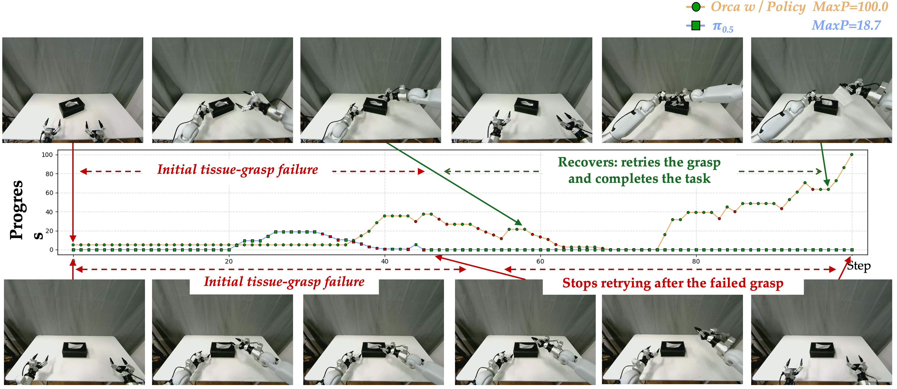

World learner
Orca: The World is in Your Mind
ORCA stands for Observation, Reasoning, Cognition, and Action: a compact view of the intelligence loop from observing the world to acting upon it.
Abstract
We introduce Orca, a world learner that learns a unified world latent from multimodal world signals and exposes it through multimodal interfaces. Orca learns the world through two complementary paradigms: unconscious learning, which captures dense natural state transitions from continuous videos, and conscious learning, which uses language-described events and VQA supervision to model meaningful state transition. In addition, we construct large-scale world-learning resources, including 126K hours of video, 130M event annotations, and 11.5M VQA examples, to support two learning paradigm. After pre-training, Orca directly uses the native language modeling head for text generation, while keeping the learned backbone frozen and adapting lightweight readout modules for image prediction and embodied action generation. Experiments show that Orca learns an effective world latent representation, achieves strong performance across language benchmarks, improves real-world interaction image prediction over image generation baselines, and enhances embodied action generation for manipulation tasks. These results suggest that Orca's world-learning paradigm provides a promising path toward models that can understand, predict, and act upon the world.
1. Training
Why: World Models Should Predict States, Not Modalities
Recent foundation models have largely been built around the principle of next prediction. Language models predict the next token, image and video models predict the next visual signal, and embodied models often predict the next action. This paradigm has proven remarkably effective: by learning to continue the sequence presented to them, models acquire powerful task-level capabilities across language, vision, and action.
However, next prediction also inherits an important limitation. The prediction target is usually tied to a specific interface: text for language models, pixels for visual models, and actions for embodied policies. As a result, the model may become highly capable at producing the next plausible output without necessarily learning the underlying state of the world that gives rise to that output. A fluent continuation does not always imply grounded understanding; a realistic frame does not always imply causal reasoning; and a correct-looking action does not always explain how the world changes after that action.
This is the gap Orca is designed to address. If the goal is to build an active world learner, the central object of modeling should not be the modality being generated, but the evolving state of the world itself: what is observed, what changes, why it changes, and how an agent can act upon it.
From this perspective, existing foundation-model objectives can be seen as different forms of next prediction:
Orca shifts the modeling target from predicting the next token, frame, or action to predicting the next state. Multimodal signals serve as observations of the world; state-transition objectives provide the basis for reasoning; the learned world latent becomes the substrate for cognition; and language, vision, and action become readouts of the same underlying state.

How: conscious and unconscious learning
How can a model learn the next state of the world? Orca follows a learning pattern similar to human experience: observation supplies dense experience, reasoning connects states and causes, cognition stores a reusable world latent, and action becomes possible when this latent is exposed through downstream interfaces.
We therefore use two complementary learning modes. Unconscious learning absorbs natural dynamics from continuous visual experience, allowing the model to learn dense state transitions and physical regularities without explicit task labels. Conscious learning introduces language, events, instructions, and questions as semantic conditions, allowing the model to learn meaningful state transitions associated with causal explanations and task intentions.

Architecture: Query 1 / Query 2 training recipe
At the architecture level, Orca connects multimodal world signals to a shared world latent representation. Query 1 emphasizes Observation-to-Cognition: can the model predict the next state from dense observation-only transitions? Query 2 emphasizes Reasoning-to-Cognition: can the model predict the next state when events, language, questions, or intentions reveal causal structure?
Query 2: Reasoning-to-Cognition through event-conditioned state transition and VQA.

- Collect multimodal world signals from visual, language, event, and VQA data.
- Use video data to learn observation-only state transitions through unconscious learning.
- Use event and VQA data to learn event-conditioned transitions and semantic state reasoning.
- Train the three objectives jointly to learn a unified world latent representation.
Action: using the world state through downstream readouts
Once learned, the world latent can be decoded through different interfaces. This is the practical reason for treating world state as the central representation: the same world latent can support a language readout for explanation and reasoning, a vision readout for prediction and imagination, and an action readout for intervention.

- Observation: gather video, event, and VQA data grounded in real-world observations.
- Reasoning: infer state transitions from both dense natural dynamics and sparse semantic conditions.
- Cognition: store the result in a unified world latent representation.
- Action: decode the latent to language, vision, and embodied action readouts.
2. Data
World-learning resources
Orca is trained with large-scale world-learning resources designed for Orca's world-learning paradigm: 125K hours of video for dense natural state transitions, 130M event annotations for language-described meaningful changes, and 11.5M VQA examples for question-conditioned state understanding.
| Resource | Scale | Learning role |
|---|---|---|
| Continuous video | 125K hours | Observation signals for dense natural state transitions. |
| Event annotations | 130M events | Reasoning signals for meaningful causal state transitions. |
| VQA examples | 11.5M examples | Cognition signals for question-conditioned world understanding. |

3. Evaluation
Question 1: How effective is ORCA at scale-up?


Orca’s world-learning objective scales consistently with model and data. Loss decreases as pre-training data grows, and the larger backbone achieves lower loss than the smaller one — suggesting next-state prediction is a learnable, scalable training signal.
Stronger world pre-training leads to stronger downstream readouts. Since the backbone is frozen during readout training, gains reflect latent space quality directly. Consistent improvements across modalities confirm that scaling world pre-training produces a more useful shared representation.
Question 2: How does Orca lead to stronger downstream readouts?
Orca is connected to three downstream readouts: language, vision, and action. We evaluate them with benchmarks of language readout, image prediction and embodied action generation, that measure the model’s ability to understand, predict, and change the world.
2.1 Understand the world
Benchmark
We evaluate Orca's capability of world understanding using VQA benchmarks of various perspectives, which can be divided into two main types: conscious and unconscious learning benchmarks.
- Unconscious Learning: TemporalBench (Cai et al., 2024) examines the dynamic latent, and 3DSRBench (Ma et al., 2025) evaluates the structural information and relationships between objects.
- Conscious Learning: Switch (Lin et al., 2025) requires understanding tangible control interfaces and predicting the outcomes of control actions based on common sense and operational intentions. MVBench (Li et al., 2024) is used to evaluate a model’s general video understanding capabilities through conscious learning.
Results
| Model | Size(B) | MVBench | TemporalBench | 3DSRBench | SWITCH | Overall |
|---|---|---|---|---|---|---|
| World Models (Large size) | ||||||
| V-JEPA 2.1 (+LLaMA3-8B) |
10 | 75.4 | 28.5 | / | / | / |
| Emu3 | 8 | 35.2 | 9.5 | 39.1 | 38.0 | 30.4 |
| Emu3.5 | 34 | 39.5 | 9.5 | 31.3 | 38.9 | 29.8 |
| Vision Language Models (Tiny size) | ||||||
| Qwen3.5 | 0.8 | 52.7 | 19.1 | 14.3 | 38.8 | 31.2 |
| Gemma 4 | 2 | 32.5 | 17.1 | 29.5 | 39.9 | 29.8 |
| SmolVLM2 | 2 | 48.7 | 18.4 | 35.5 | 32.0 | 33.7 |
| MiniCPM-V-4.6 | 2 | 41.4 | 21.2 | 47.7 | 41.2 | 37.9 |
| Vision Language Models (Small size) | ||||||
| DeepSeek-VL2 | 3 | 40.5 | 21.0 | 32.1 | 35.5 | 32.3 |
| Qwen3.5 | 4 | 67.1 | 25.2 | 48.1 | 42.8 | 46.7 |
| Gemma 4 | 4 | 45.6 | 20.2 | 44.8 | 52.4 | 40.8 |
| Orca | 4 | 65.3 | 34.2 | 52.1 | 55.6 | 51.2 |
Orca achieves the best overall performance among 4B-scale small VLMs, outperforming Qwen3.5 and Gemma 4 with the same parameter size. It possesses core advantages in temporal reasoning and spatial perception, and demonstrates exceptional parameter utilization efficiency across different model scales.
Capability Analysis.
| Capability | Qwen3.5 | ORCA advantage |
|---|---|---|
| State Transition | 51.86 | 64.13 (+12.27%) |
| Commonsense Reasoning | 57.76 | 62.95 (+5.19%) |
| Spatial Relations | 54.68 | 55.25 (+0.57%) |
| Dynamic Motion | 57.03 | 65.55 (+8.52%) |
By analyzing ORCA's performance across individual capability subcategories in all benchmarks, we find that our model achieves substantial gains over the Qwen3.5 backbone in all aspects of state transition, commonsense reasoning, spatial relations, and dynamic motion.
2.2 Predict the world
benchmark
We use PRICE (Prediction of Real-world Interactions with Constraints Evaluation) benchmark to evaluates a model's ability to predict real-world physical state changes. It operates by requiring the model to generate a future state image based on a current image and a language instruction. Crucially, while this involves image generation, PRICE is specifically designed to test the model's capability as a physical "predictor" rather than a mere "painter". The benchmark is constructed using 4 datasets: AgiBot-World (AgiBot-World-Contributors et al., 2025), Galbot-General, PE-Video (Bolya et al., 2025), and PSI-Ego (PsiBot, 2026).

baselines
We report PRICE results with box plots and qualitative case comparisons. We selected recent, representative image generation models with a similar scale to Orca as baselines for comparison: including OmniGen2 (Wu et al., 2026) (3B VLM + 4B vision decoder), FLUX.1-Kontext (Black Forest Labs et al., 2025) (12B vision decoder), and Flux.2 [klein] (Black Forest Labs, 2026) (4B VLM + 4B vision decoder), in which Orca outperforms all baselines in both quantitative and qualitative evaluations.

case comparison
We compare Orca with other baseline on representative PRICE examples. Red boxes mark typical baseline failures, which Orca better preserves the robot embodiment and other information during interaction.

2.3 Change the world
The change-world evaluation uses GalBot Real-robot experiments as an out-of-domain (OOD) benchmark to evaluate embodied task.
settings
We used the Galbot G1 real robot (Galbot, 2024) to collect data on five tasks, including: Take book, Stacked bowls, Pull out tissue, Stamp, and Scoop sugar. Based on these, several OOD experiments were designed, including 3 kinds of Environmental Generalization and 5 kinds of Object Generalization, as shown in the figure below.

results
We uses the rule-based score and PRM-as-a-Judge as metrics. The rule-based score measures key-stage task completion, and PRM-as-a-Judge provides dense trajectory-level diagnostics, including progress, stagation, failure progress, recovery and overall action quality.
| OOD | Model | Rule↑ | PRM-as-a-Judge Diagnostics | ||||||||||
| M25↑ | M50↑ | Stag↓ | FNS↑ | ERS↑ | OAS↑ | ||||||||
| Env. | π0.5 | 27.6 | 54 | 16 | 70.4 | 17.7 | 13.6 | 7.3 | |||||
| V-JEPA 2.1 | 15.2 | 40 | 12 | 79.4 | 13.9 | 6.7 | 4.1 | ||||||
| Qwen3.5 | 12.4 | 26 | 10 | 86.7 | 11.2 | 7.2 | 3.7 | ||||||
| Orca | 25.2 | 62 | 26 | 65.3 | 20.4 | 24.2 | 10.6 | ||||||
| Obj. | π0.5 | 31.2 | 54 | 12 | 76.7 | 12.9 | 10.8 | 8.2 | |||||
| V-JEPA 2.1 | 18.8 | 14 | 2 | 90.4 | 6.3 | 5.9 | 2.4 | ||||||
| Qwen3.5 | 8.6 | 10 | 0 | 95.0 | 4.0 | 0.3 | 0.9 | ||||||
| Orca | 26.2 | 60 | 8 | 71.4 | 15.4 | 25.0 | 8.1 | ||||||
analysis
Orca outperforms the baselines on the vast majority of metrics. For example, on ERS, the metric that measures recovery after progress drops or execution deviations, Orca is significantly ahead of the other models. The demonstration below shows Orca's ability of recovery after tissue-grasp failure.

demo trials
A 5-task matrix evaluated across in-domain execution, environment generalization, and object generalization.
GalBot Real-Robot Evaluation
Base / In-Domain Tasks
Five core manipulation skills evaluated in their base settings.
Environment Generalization
The same task families under changed tablecloth styles, backgrounds, and distractors.
Object Generalization
Each inference object transfers from its paired training task: book to cutting board, bowls to boxes, tissue to bread, stamp to children's stamp, and sugar to candy.
Citation
Replace this placeholder after the paper, repository, model, and dataset pages are finalized.
@misc{orca_world_model_2026,
title = {Orca: The World is in Your Mind},
author = {Orca Team},
institution = {Beijing Academy of Artificial Intelligence},
year = {2026},
howpublished = {\url{https://orca-baai.github.io}}
}References
- TempCompass. Yuanxin Liu, Shicheng Li, Yi Liu, Yuxiang Wang, Shuhuai Ren, Lei Li, Sishuo Chen, Xu Sun, and Lu Hou. TempCompass: Do Video LLMs Really Understand Videos? Findings of ACL, 2024.
- MVBench. Kunchang Li, Yali Wang, Yinan He, Yizhuo Li, Yi Wang, Yi Liu, Zun Wang, Jilan Xu, Guo Chen, Ping Luo, Limin Wang, and Yu Qiao. MVBench: A Comprehensive Multi-modal Video Understanding Benchmark. CVPR, 2024.
- TemporalBench. Mu Cai, Reuben Tan, Jianrui Zhang, Bocheng Zou, Kai Zhang, Feng Yao, Fangrui Zhu, Jing Gu, Yiwu Zhong, Yuzhang Shang, Yao Dou, Jaden Park, Jianfeng Gao, Yong Jae Lee, and Jianwei Yang. TemporalBench: Towards Fine-grained Temporal Understanding for Multimodal Video Models. arXiv, 2024.
- 3DSRBench. Wufei Ma, Haoyu Chen, Guofeng Zhang, Yu-Cheng Chou, Jieneng Chen, Celso de Melo, and Alan Yuille. 3DSRBench: A Comprehensive 3D Spatial Reasoning Benchmark. ICCV, 2025.
- SWITCH. Jieru Lin, Zhiwei Yu, and Borje F. Karlsson. Switch: Benchmarking Modeling and Handling of Tangible Interfaces in Long-horizon Embodied Scenarios. arXiv, 2025.
- V-JEPA 2.1. Lorenzo Mur-Labadia, Matthew Muckley, Amir Bar, Mido Assran, Koustuv Sinha, Mike Rabbat, Yann LeCun, Nicolas Ballas, and Adrien Bardes. V-JEPA 2.1: Unlocking Dense Features in Video Self-Supervised Learning. arXiv, 2026.
- Emu3. Xinlong Wang et al. Multimodal Learning with Next-token Prediction for Large Multimodal Models. Nature, 2026.
- Emu3.5. Yufeng Cui et al. Emu3.5: Native Multimodal Models are World Learners. arXiv, 2025.
- Qwen3.5. Qwen Team. Qwen3.5: Accelerating Productivity with Native Multimodal Agents. 2026.
- Gemma 4. Google DeepMind. Gemma 4: Byte for Byte, the Most Capable Open Models. 2026.
- DeepSeek-VL2. Zhiyu Wu et al. DeepSeek-VL2: Mixture-of-Experts Vision-Language Models for Advanced Multimodal Understanding. arXiv, 2025.
- MiniCPM. Junbo Cui et al. MiniCPM-o 4.5: Towards Real-Time Full-Duplex Omni-Modal Interaction. arXiv, 2026.
- SmolVLM. Andres Marafioti et al. SmolVLM: Redefining Small and Efficient Multimodal Models. arXiv, 2025.
- AgiBot World. AgiBot-World-Contributors et al. AgiBot World Colosseo: A Large-scale Manipulation Platform for Scalable and Intelligent Embodied Systems. IROS, 2025.
- Perception Encoder. Daniel Bolya et al. Perception Encoder: The Best Visual Embeddings are Not at the Output of the Network. NeurIPS, 2025.
- SynData. PsiBot. SynData: A Large-Scale Real-World Multimodal Dataset for Embodied Intelligence. Hugging Face Dataset, 2026.
- Galbot G1. Galbot. Galbot G1, June 2024. URL https://www.galbot.com/g1.
- Flux.1 kontext. Black Forest Labs et al. Flux.1 kontext: Flow matching for in-context image generation and editing in latent space. arXiv, 2025.
- Flux.2 [klein]. Black Forest Labs. Flux.2 [klein]: Towards interactive visual intelligence, 2026.
- OmniGen2. Wu et al. OmniGen2: A 3B-Parameter Multimodal Model with a 4B-Parameter Vision Decoder for Advanced Image Generation. CVPR, 2026.